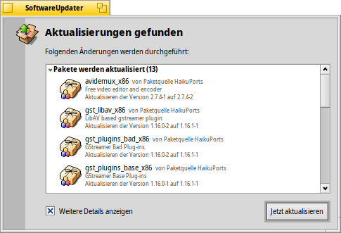

SoftwareUpdater
SoftwareUpdater
| Deskbar: | ||
| Ort: | /boot/system/apps/SoftwareUpdater | |
| Einstellungen: | ~/config/settings/SoftwareUpdater_settings |
SoftwareUpdater sucht alle aktiven Paketquellen (siehe Paketquellen-Einstellungen) nach Aktualisierungen für die installierten Pakete ab, inklusive Systemupdates für Haiku selbst. Wurden Updates gefunden, werden diese in einem Rutsch heruntergeladen und installiert.
Nach dem Start sucht SoftwareUpdater nach aktualisierten Paketen und zeigt sie in einer Liste mit den jeweiligen neuen Versionsnummern und einer kurzen Beschreibung an. Ist aktiviert, wird auch noch die jeweilige Paketquelle, sowie alte und neue Versionsnummer angezeigt.
Mit wird der Download aller Pakete und ihre anschließende Installation gestartet.
Je nachdem, welche Pakete aktualisiert wurden, kann es sein, dass Haiku neu gestartet werden muss. Erst dann wird der Update-Prozess abgeschlossen. Aktualisierte Anwendungen müssen in der Regel einfach nur neu gestartet werden, während Änderungen an Haiku selbst meist einen Neustart erfordern.
Jedesmal wenn Pakete aktualisiert, installiert oder deinstalliert werden (mittels SoftwareUpdater/HaikuDepot oder im Terminal mit pkgman), wird ein neuer "state" unter /system/packages/administrative/ angelegt. Dadurch kann man von den Boot Options aus einfach in einen alten "state" booten, falls mal ein installiertes/aktualisiertes Paket nicht so funktioniert wie es soll.
Da diese "state" Ordner Kopien der aktualisierten/deinstallierten Pakete enthalten, kann der "administrative" Ordner mit der Zeit ordentlich anschwellen. Solange es noch keine Möglichkeit der automatischen Bereinigung gibt, empfiehlt es sich ab und an die Größe des "administrative" Ordners zu prüfen und gegebenenfalls einige alte "state" Ordner zu löschen, in die man sowieso nicht mehr booten wird.
Zurück zu früheren Haiku Versionen
Es kommt selten vor, aber es ist möglich, dass ein Haiku-Update Fehler enthält, mit denen man sich nicht bis zu deren Beseitigung abfinden will. Von den Bootloader-Optionen aus lässt sich in einen funktionierenden älteren Zustand booten, siehe Boot Loader - Fehlersuche.
Um fest zu dieser Haiku Version ("Haiku revision = hrev") zurückzukehren, muss man die 'Haiku' Paketquelle fest auf diese 'hrev' einstellen. Die aktuelle 'hrev' findet sich im "Über Haiku" in der Deskbar. Um beispielsweise zur hrev56231 zurückzukehren, gibt man folgendes im Terminal ein:
pkgman add https://eu.hpkg.haiku-os.org/haiku/master/$(getarch)/r1~beta3_hrev56231 pkgman full-sync
Achtung: Haiku bekommt nun keine neuen Updates mehr, man bleibt fest auf der eingestellten 'hrev'. Man sollte den festgestellten Fehler also mitteilen und wenn möglich bei dessen Beseitigung mithelfen. Wenn das geschehen ist - man kann dazu die Commit Logs verfolgen - kann man wieder zur aktuellen ("current") Paketquelle zurückkehren:
pkgman add https://eu.hpkg.haiku-os.org/haiku/r1beta3/$(getarch)/current pkgman full-sync